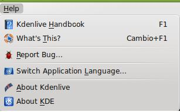

Edición de Audio y video
J. Help
El clásico menú de ayuda de todos los programas. El mismo dispone de un manual, de la ayuda interactiva y de los créditos de las personas que han elaborado esta aplicación.

Jo.R.C.A. 2004 - 2011

Edición de Audio y Video con Software Libre by José Ramón Cerdeira Alonso is licensed under a Creative Commons Reconocimiento-No comercial-Compartir bajo la misma licencia 3.0 España License